<html>
<head>
  <title>IFTTT⇢Node-RED transfaer guide - @ladicle</title>
  <link rel="stylesheet" href="lib/talkie.min.css">
  <link rel="stylesheet" href="lib/talkie-default.min.css">
  <link rel="stylesheet" href="lib/hljs-styles/railscasts.css">
  <link rel="stylesheet" href="dest/style.css">
</head>
<body>

<script layout="cover" invert type="text/x-markdown"
  backface="image/cover.jpg" backface-filter="blur(1px) brightness(.5)">
# IFTTT⇢Node-<b class="node-red">RED</b><br/>乗り換え案内

### Aya Igarashi [@ladicle](https://twitter.com/ladicle)
</script>


<script layout type="text/x-markdown">
## About Me

@ladicle


I love house hack!<br/>
[IoTLT vol.8](http://iotlt.connpass.com/event/20246/) held on the 15th.
</script>


<script layout type="text/x-markdown" vote>
## Route map
* What is IFTTT?
* IFTTT ⇢ Node-RED へ乗り換える
* Use default nodes
* Add node module
* Create new nodes
* もう一度IFTTTとNode-REDを比較してみる
</script>

<script layout type="text/x-markdown">
# What is <b class="node-blue">IFTTT</b>?
> Platform to connect multiple web service APIs
</script>

<script layout type="text/x-markdown">
# <b class="node-red">IF</b>
## <b class="node-red">T</b>HIS
## <b class="node-red">T</b>HEN 
## <b class="node-red">T</b>HAT

> Origin of the name is initials
</script>

<script layout type="text/x-markdown">
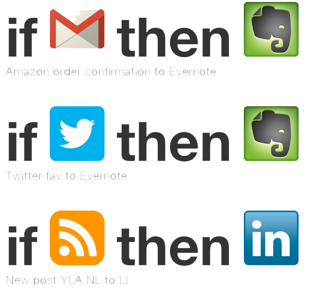

> "Channel" ==  One web service<br/>
"Channel"は状態と動作を持ち、<br>
繋ぎあわせたものを"Recipe"と呼ぶ。
</script>

<script layout="code" type="text/x-markdown">
# In case of Node-<b class="node-red">RED</b>?
</script>

<script layout type="text/x-markdown">
## INPUT
## ( <b class="node-blue">FUNCTION</b> )
## OUTPUT

> 全てが"Node"によって構成されている。<br/>
Inputはmsgを作成し、<br/>Function/OutputがそのMsgを処理する。<br/>
Msgを処理する一連のセットを"flow"と呼ぶ。
</script>

<script layout type="text/x-markdown">
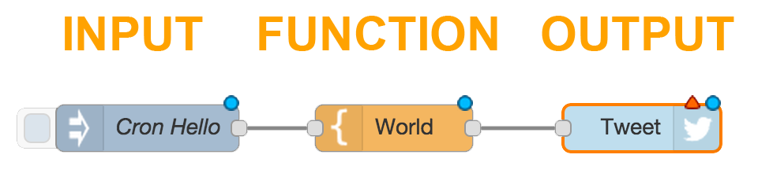
</script>

<script layout type="text/x-markdown">
## INPUT
## FUNCTION ×<b class="node-red"> ∞</b>
## OUTPUT ×<b class="node-red"> ∞</b>

> "Node"数に制限はない。<br/>
"Function"によって、<br/>Webサービス以外の動作も行える
</script>

<script layout type="text/x-markdown">
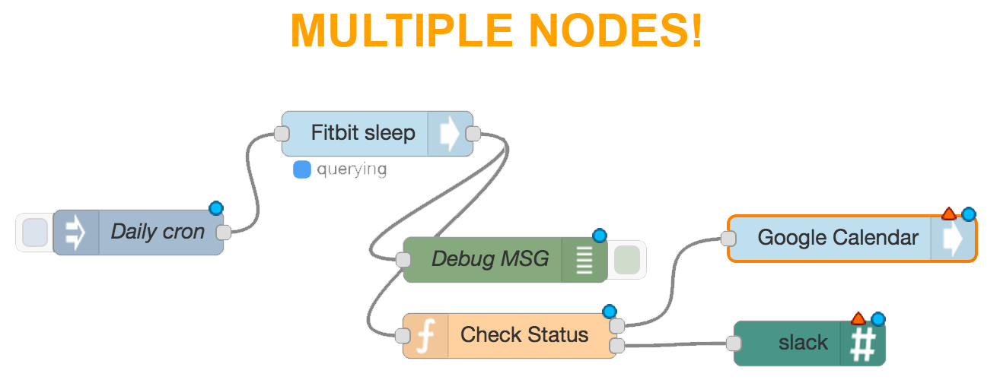
</script>

<script layout="cover" invert type="text/x-markdown"
  backface="image/norikae.jpg" backface-filter="blur(2px) brightness(.4)">
# How?
</script>

<script layout type="text/x-markdown" vote>
## 乗り換え"Recipe"
- <b class="node-red">Android</b>が家or会社の<b class="node-blue">SSID</b>を検出したとき、<br/>　  時間をファイルに保存する
- <b class="node-red">Fitbit</b>が<b class="node-blue">睡眠時間</b>を記録したとき、<br/>　GoogleCalendarにイベントを登録する
- <b class="node-red">Netatmo</b>が今日の天気を<b class="node-blue">雨</b>と予報したとき、<br/>　  Pushbullet経由で携帯に通知する
</script>

<script layout type="text/x-markdown">
# #1 Catch the SSID
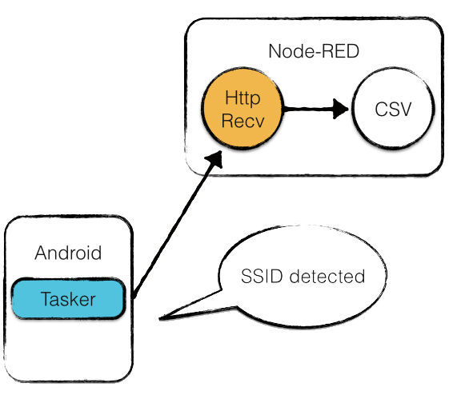
</script>

<script layout="code" type="text/x-markdown">
# Install [Node-RED](https://github.com/node-red/node-red)

``` shell
git clone https://github.com/node-red/node-red.git
cd node-red
npm install && grunt build
node red.js
```
</script>

<script layout type="text/x-markdown">
# Initial state
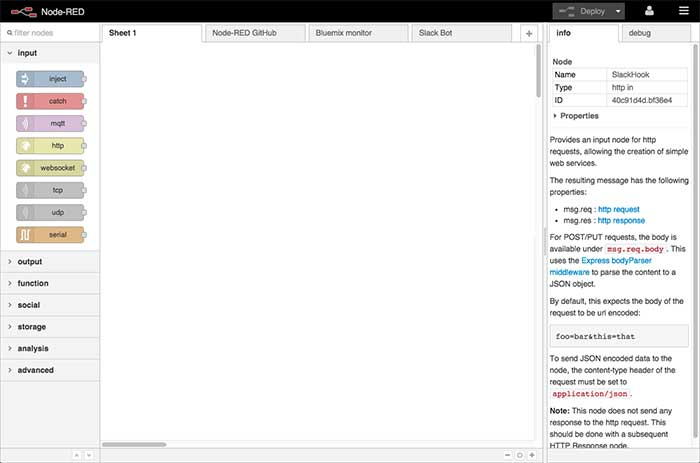
### http://localhost:1880/
</script>

<script layout type="text/x-markdown">
## Android
#### [Tasker for Android](https://play.google.com/store/apps/details?id=net.dinglisch.android.taskerm&hl=ja)<br>Androidの中のタスクマネージャー<br>SSIDを検出したらNode-REDのURLへpostするイベントを作成する
	
## Node-RED
#### Web Node: Androidからのイベント通知を受け取る<br> CSV Node: イベントを受け取った時間とSSIDを保存する
</script>

<script layout type="text/x-markdown">
# Catch the SSID
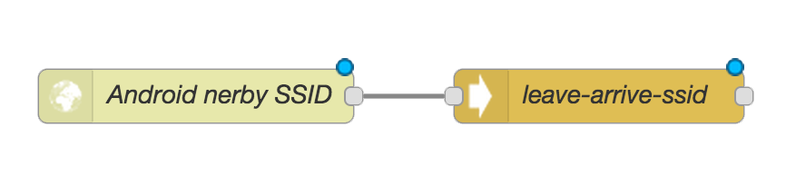
</script>

<script layout type="text/x-markdown">
# #2 Record Sleep Log
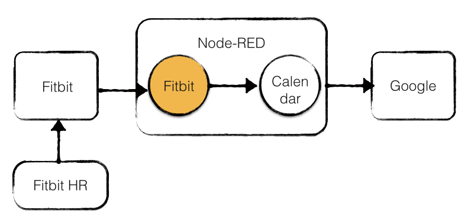
</script>

<script layout type="text/x-markdown">
## Add Social Nodes
- [node-red-node-fitbit](https://www.npmjs.com/package/node-red-node-fitbit)<br> Fitbitが睡眠時間を記録した通知とデータを受け取る
- [node-red-node-google](https://www.npmjs.com/package/node-red-node-google)<br> カレンダーにイベントを登録する
</script>

<script layout="code" type="text/x-markdown">
# Install module

``` shell
# Install modules
npm install node-red-node-goolge
npm install node-red-node-fitbit

# Restart Node-RED
node red.js
```
</script>

<script layout type="text/x-markdown">
### Register an Application -> [Google](https://console.developers.google.com/) / [Fitbit](https://dev.fitbit.com/apps/new)
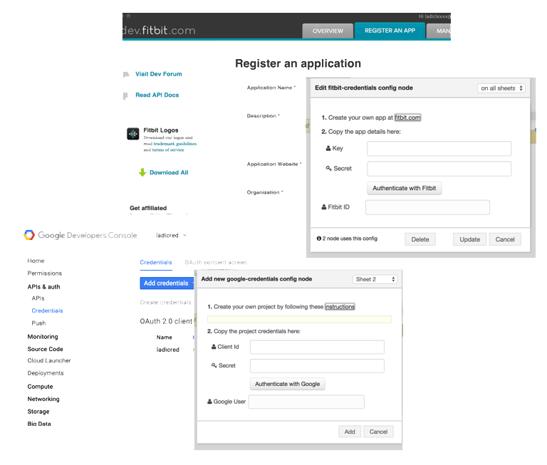
</script>

<script layout type="text/x-markdown">
# Record sleep time
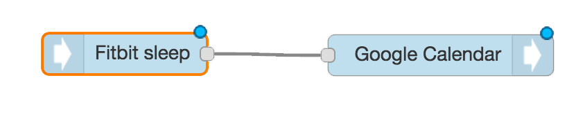
</script>

<script layout type="text/x-markdown">
## #3 Don't forget the umbrella
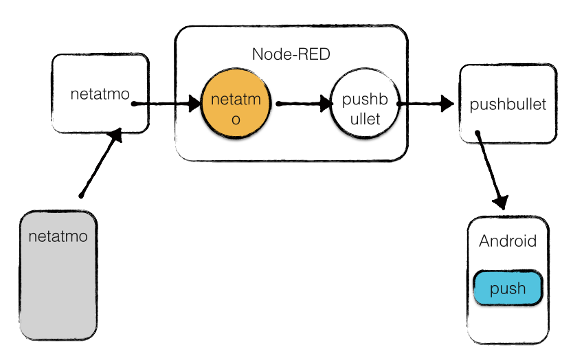
</script>

<script layout="code" type="text/x-markdown">
# How to create a node?

``` shell
# Generate package file
npm init

# Create file
emacs LICENSE
emacs README.org
emacs netatmo.html
emacs netatmo.js
```
</script>

<script layout type="text/x-markdown" vote>
# Role
* package.json  ⇢ Node名や使用ライブラリ等
* LICENSE       ⇢ その名の通りライセンス
* README.org    ⇢ 分かりやすく説明したドキュメント
* netatmo.html  ⇢ Node-REDのUIで見える部分
* netatmo.js    ⇢ Nodeのメッセージ処理内容
</script>

<script layout type="text/x-markdown" vote>
# Nodeを知る

* 本家のDocument、[Creating Nodes](http://nodered.org/docs/creating-nodes/)をよむ
* 最も簡潔に記述されている本家の[Core Node](http://nodered.org/docs/creating-nodes/)をよむ
* 作りたいNodeに近いものを探す<br>　　(OAuth部分が一致した [node-red-node-fitbit](https://github.com/node-red/node-red-web-nodes/tree/master/fitbit) を参考にした)
* サービス名とかを置換してちょっとずつ動かしてみる
</script>

<script layout type="text/x-markdown">
# Don't forget the umbrella
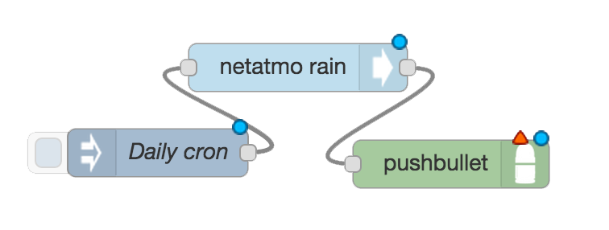
</script>

<script layout="code" type="text/x-markdown">
# I <b class="node-blue">Think</b>
</script>

<script layout type="text/x-markdown" vote>
# Good!

* Functon Nodeがあるので、<br>　　処理条件を複数追加するなど<br>　　より細かな制御ができる
* 同じNodeに対する処理を<br>　　簡潔に記述することができる
</script>

<script layout type="text/x-markdown" vote>
# Not good...

* 各アプリケーションでDeveloper登録を行い、<br>　　認証用のアプリケーション情報を入力を行うのが面倒
* Node-RED libraryを探すときに、<br>　　似たようなものが複数あるため選択になやむ　　<br>　　(npmのDL数でソートできれば…)
* Nodeの種類が少ないので、完全移行はまだ難しい
</script>

<script layout type="text/x-markdown">
# Let's start Node-<b style="node-red">RED</b>!

### Thank <b style="node-blue">you</b> !
</script>

<script layout="code" type="text/x-markdown">
# <b class="node-blue">Extra</b>
</script>

<script layout type="text/x-markdown" vote>
# Recommended Nodes

* [node-red-contrib-hue](https://www.npmjs.com/package/node-red-contrib-hue)
* [node-red-contrib-slack](https://www.npmjs.com/package/node-red-contrib-slack)
* [node-red-node-pushbullet](https://www.npmjs.com/package/node-red-node-pushbullet)
</script>

<script layout type="text/x-markdown" vote>
# Probably I make it.

* [node-red-node-pocket](https://www.npmjs.com/package/node-red-node-pocket)
* [node-red-node-alexa](https://www.npmjs.com/package/node-red-node-alexa)
* [node-red-node-feedly](https://www.npmjs.com/package/node-red-node-feedly)
* [node-red-node-irkit](https://www.npmjs.com/package/node-red-node-irkit)
</script>

<script src="lib/highlight.min.js"></script>
<script src="lib/talkie.min.js"></script>
<script src="https://cdn.mlkcca.com/v2.0.0/milkcocoa.js"></script>
<script src="https://cdnjs.cloudflare.com/ajax/libs/bacon.js/0.7.73/Bacon.min.js"></script>
<script>
window.talkie = Talkie();

// リンクは別タブ
var i, links = document.querySelectorAll("a[href^='http']")
for(i=0; i<links.length; i++) {
  links[i].setAttribute('target', '_blank');
}
</script>
<script src="dest/script.js"></script>
</body>
</html>
